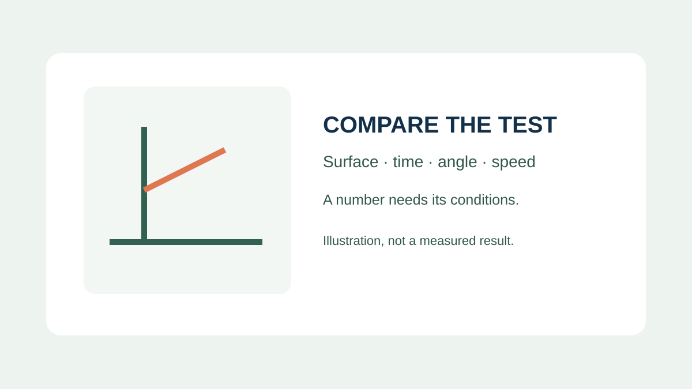
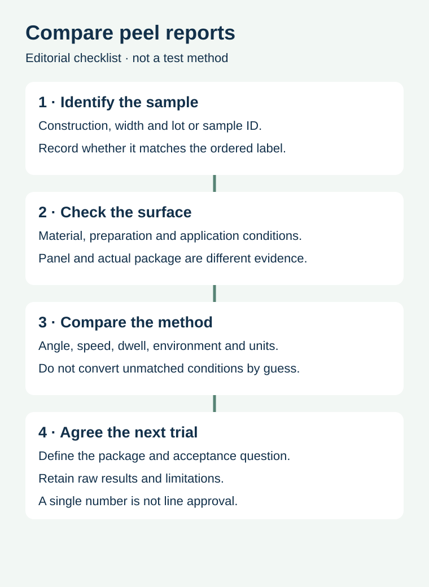

Two suppliers quote peel-adhesion figures for a beverage label. One number is higher, so it looks like the safer choice. Before selecting it, ask whether the labels were tested on the same surface, at the same angle and speed, after the same time. If those conditions differ, the values may answer different questions.
Compare the test conditions and sample identity before comparing the force. Then decide what additional evidence is needed on the actual package and operating route. A laboratory number is not, by itself, approval for a chilled bottle, oily container or small curved surface.

Which separation was tested?
Peel adhesion describes removal of the label from a substrate under a defined method. Release force concerns separating the label from its liner. Those are different interfaces. A label can dispense well but fail to stay on a bottle, or adhere well to a bottle while dispensing poorly. Use the separate release-force guide for the liner-side decision.
Avery Dennison's peel measurement discussion explains that angle and speed influence results and that values from different method conditions cannot simply be translated. Its illustrated data are specific to the stated materials and test conditions; they are not results for your label.
Read the method before ranking the results


| Field | Ask what was used | Why it matters |
|---|---|---|
| Construction | Face, adhesive, finish, sample identity and width | The tested sample must be identifiable |
| Surface | Panel or package, material, finish and preparation | Standard panels may not represent the purchased container |
| Method | Named method, peel angle and speed | Different geometries or speeds may produce different values |
| Time and environment | Application conditions, dwell and test temperature | Bond development and test state can differ |
| Reported value | Force, width basis, units and number of samples | Prevents comparing a force with a normalized force by mistake |
| Observation | Reported failure mode and variation, where available | One average may not describe all sample behaviour |
Keep the original report with the proposal. If the unit basis differs, ask the testing party to explain any valid conversion and preserve the original result. Converting units does not make unlike surfaces, dwell periods or test methods equivalent.
A panel is a starting point, not your bottle
A stainless-steel or standard glass panel can be valuable for consistent comparisons. An actual food container adds its material, coating, curvature, surface condition and application history. A label that performs well on one controlled panel may need further evaluation on a molded tub or coated bottle. Identify which part of the intended use each sample represents.
For example, a hypothetical buyer receives one report on a flat standard panel after a defined dwell and another on a jar using a different preparation. The numbers cannot establish which complete construction is better for every jar. Request comparable evidence where feasible, then agree a relevant package trial with the supplier and the responsible production team. Record what the trial can and cannot establish.
Separate initial handling from later performance
Immediately after application, a label may not behave the same way it does after a period of contact. The adhesion dwell guide helps map when the youngest packs are first handled. Do not copy a dwell time from a supplier example into a different production process as a universal rule.
If edge lift on a tight radius is the concern, a flat-panel peel number may not answer the full question. Review the actual package, label size and intended exposure with the material specialist. The small-bottle edge-lift guide treats that package geometry separately. Compare the complete label construction rather than only the adhesive family name.
Request a comparable evidence package
- Identify the supplied construction, sample width and reference.
- Ask for surface, preparation and application conditions.
- Record method, angle, speed, dwell, temperature and units.
- Retain individual or summarized observations and failure mode where available.
- Agree which actual package and handling conditions still need evaluation.
- Assign a decision owner and record the limits of the available evidence.
To discuss the label, prepare a specification inquiry with the container, construction, application and handling conditions, plus any reports already received. The contact page opens an email draft and lists email or WhatsApp for attachments. Actual test services and supply capabilities require confirmation.